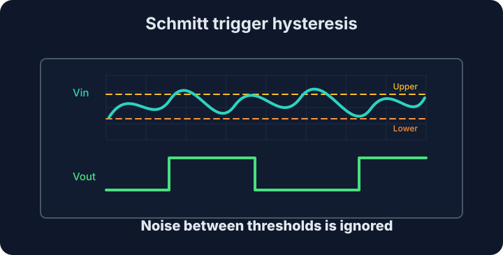
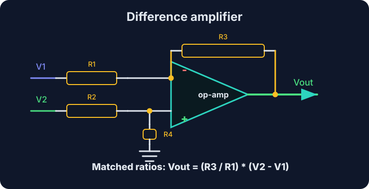

op-amp-configurations-how-do-you-wire-a-schmitt-trigger-and-what-probl / image_2
Schmitt trigger hysteresis schmitt_hysteresis

Prompt
A graph showing a noisy input signal with two distinct horizontal threshold lines labeled (e.g., Upper = 5V, Lower = 4V). Below it, the resulting output is a clean square wave that ignores the noise flickering between the two thresholds.
op-amp-configurations-how-do-you-wire-a-difference-amplifier-and-what / image_1
Difference amplifier op_amp_difference

Prompt
Schematic of a Difference Amplifier: V1 connected to (-) via R1, V2 connected to (+) via R2. A feedback resistor R3 from output to (-), and a resistor R4 from (+) to ground.